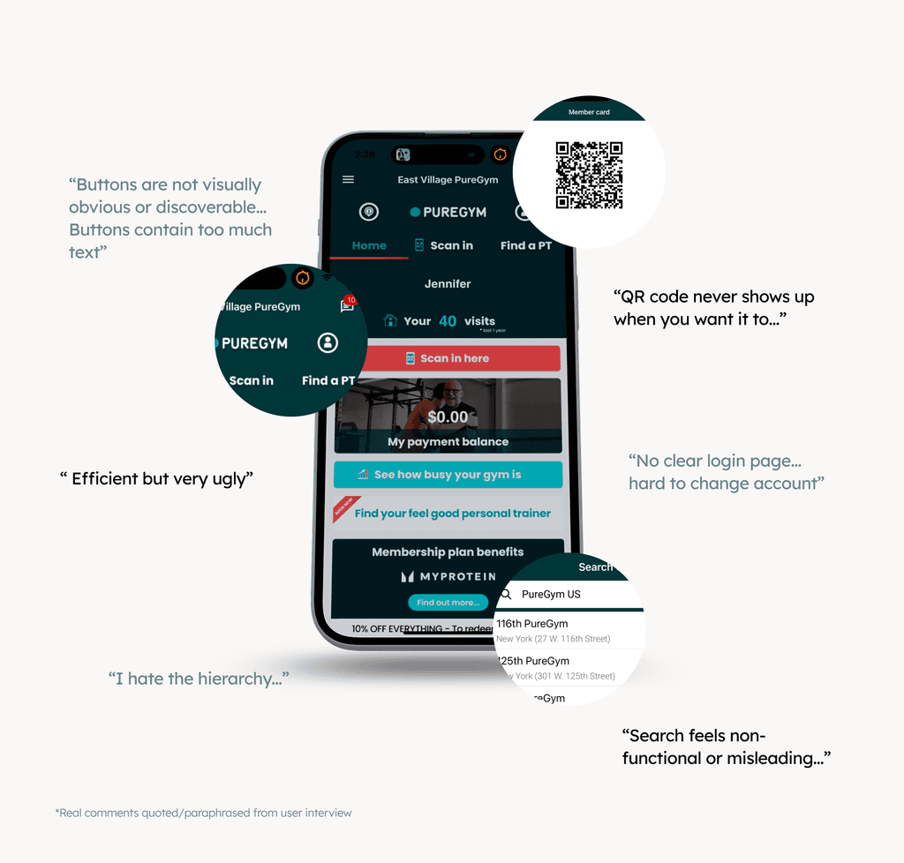
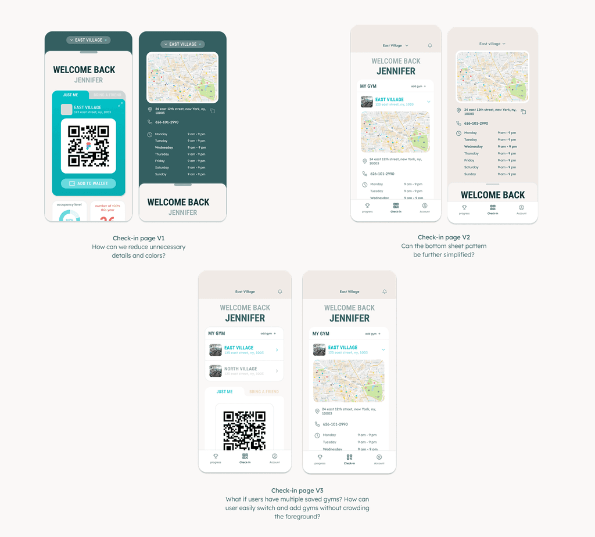
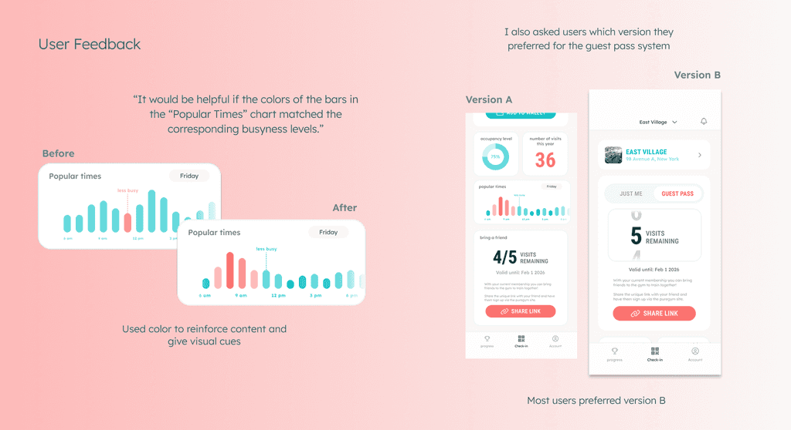
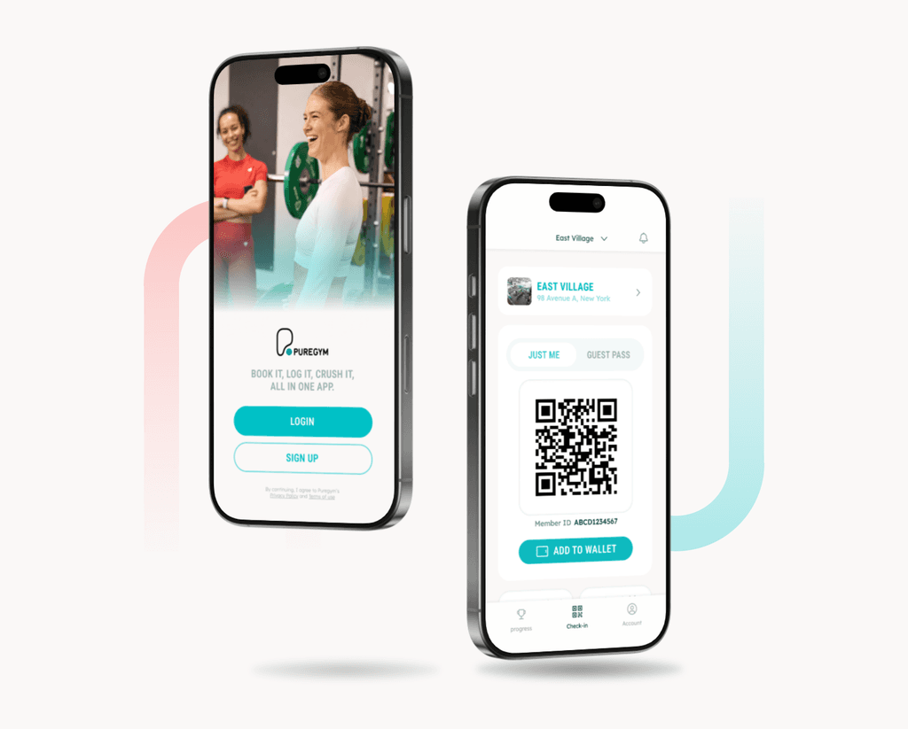
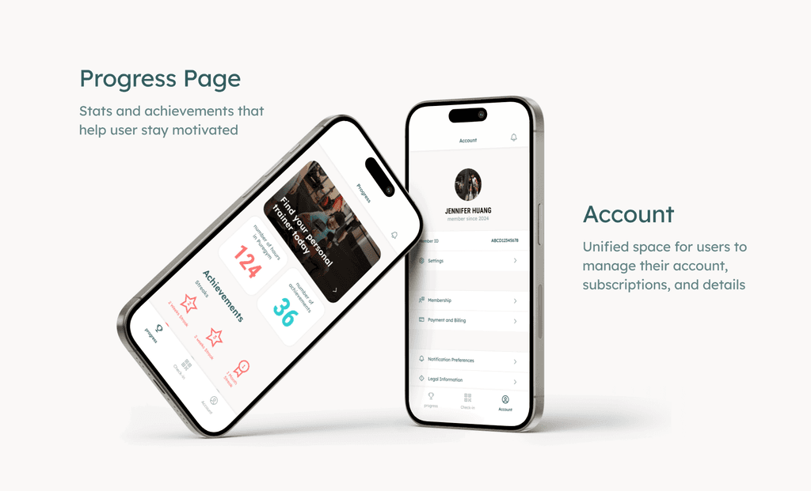
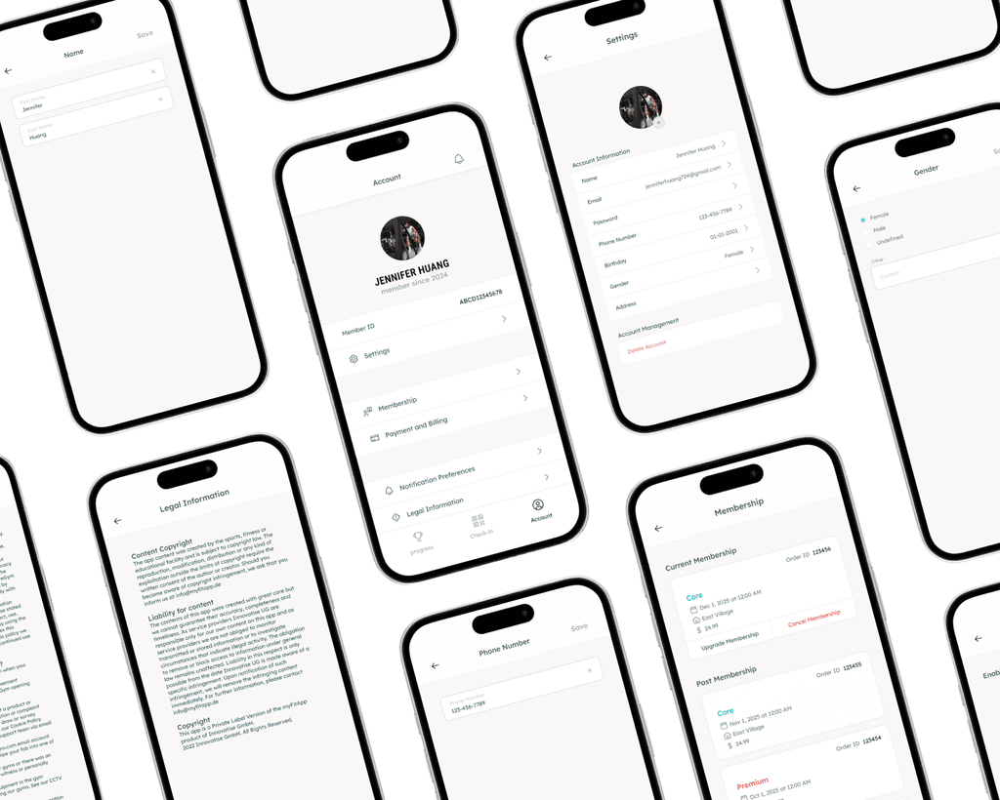

Puregym Redesign
Reimagining the mobile application for Puregym
Overview
A product redesign for PureGym focused on minimizing check-in friction while enhancing and expanding its existing features.
Check out the complete case study here.
Context
As a PureGym member, I struggled with the Puregym App design.
And it's not just me. I've heard similar frustrations from multiple people, from friends to casual gym-goers. As a result, I wanted to design a case study for PureGym that offers new insights on how to resolve some of the current issues surrounding the check-in experience.
KEY INSIGHTS
The design is efficient, yet neither intuitive nor engaging enough to retain users.
I interviewed real PureGym users on how they interact with the app to better understand their challenges and frustrations. From my research, I learned that users use the app not because they want to, but because they have to, and that's an issue.

SOLUTION
Designing a check-in process that feels intuitive.
I went through numerous design iterations, progressively simplifying the process until it required the fewest possible steps for users to check into the gym they want.

USER FEEDBACK
Bringing the product back to the users and actually putting it in their hands.
While the overall response was largely positive, I identified several key areas for improvement. I refined the product to create an experience that is not only intuitive, but also drives user acquisition and retention.

Final Design
A design that feels effective, brand-consistent, and clarifies rather than confuses.



REFLECTIONS
Always talk with users to understand the product.
When conducting the interviews, I was initially nervous about approaching people and speaking with them directly. However, most of the people I spoke with were incredibly kind and offered valuable insights. I even interviewed two UI/UX designers at the gym, who were very helpful and receptive.
During the design process, I realized the importance of learning from past examples and established patterns. By drawing from familiar products, I was able to better understand existing design conventions and ground my work in proven solutions.
Thanks for reading!
Want to learn more? Curious about the details? Feel free to reach out to me at